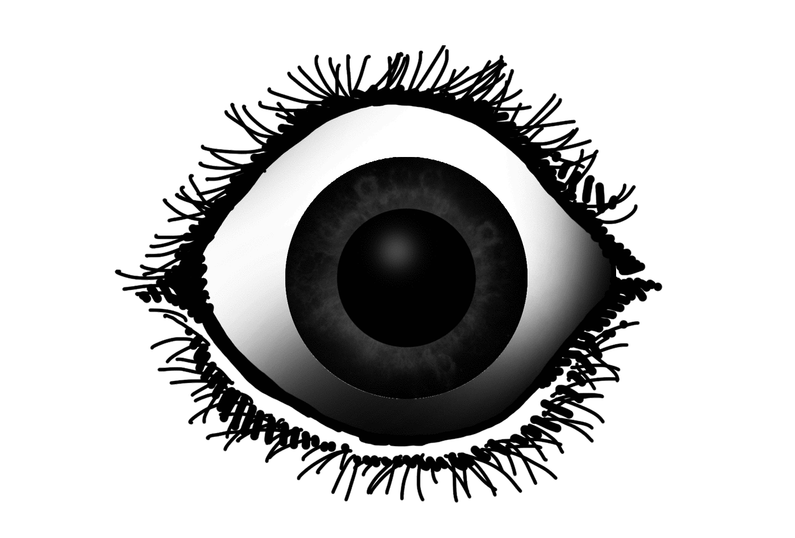
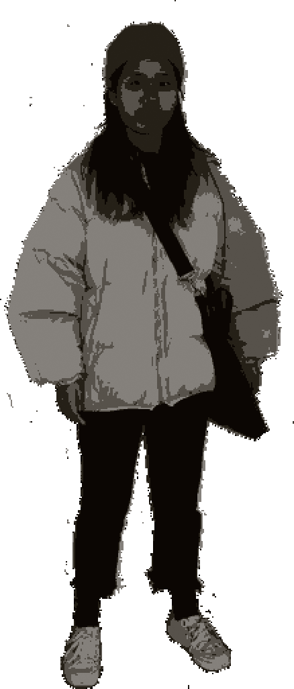
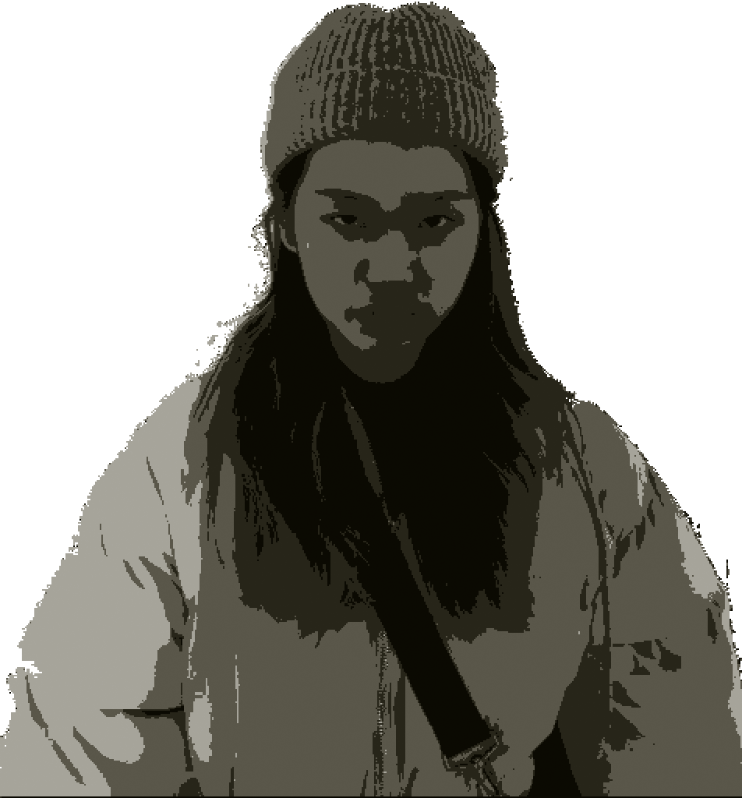
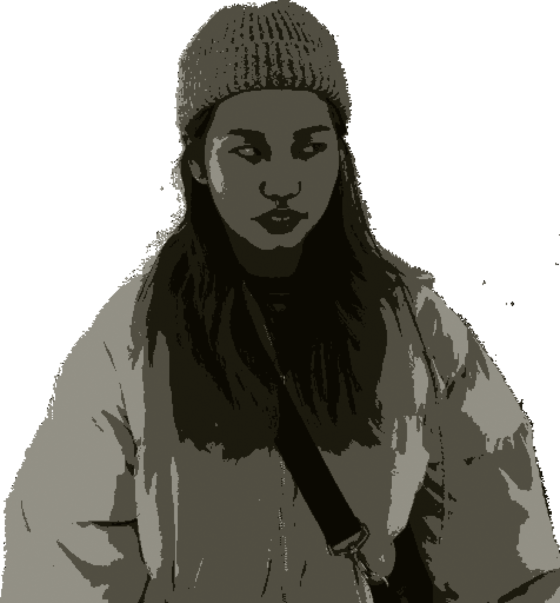
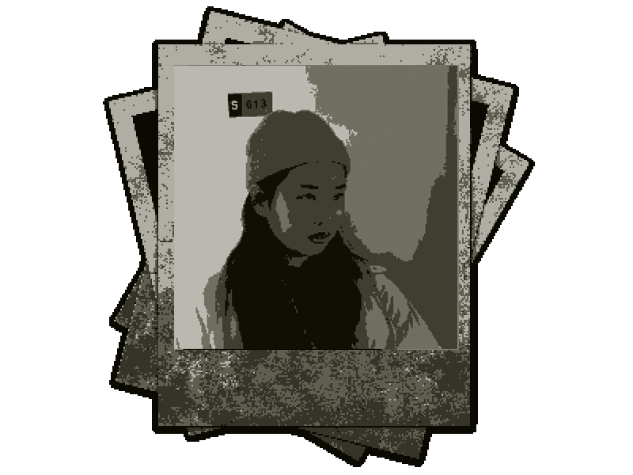
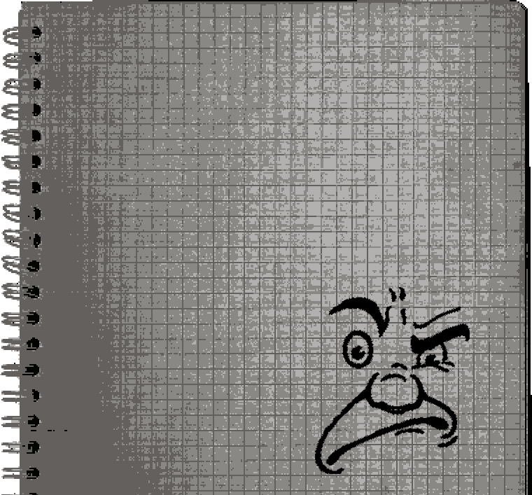

.........?
방금 이상한게 있었는데...?
디자인과 사무실이다.
아직 너무 이른시간이라 열지 않았다.
..........
..................(눈을 피했다.)
#5 ...
창수가 멍하니 서있다가
말을 걸려고 하니까
눈을 피해버렸다.
내가 지나쳐 가기를
기다리고 있는 것 같다.
내가 오기 전에
뭘 하고있던 걸까?









